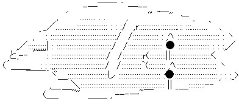

日々、想ふ
〜過去感じたことがつれづれと〜
（できるだけ最大化してお読みください）
日々、想ふ
そんな１月最後の日。１/３１
風邪引いた
とりあえず家で
寝てみよう
タケユキです。
結局ここ数日寝まくってる気がします。
まぁ体調って大事ですからね。
今日提出のレポート（手抜きでもなんとかなるほう）、
結局５行だけ書いて出しました。
文章に必要な「起承転結」でいう「起」の部分だけ書いて
力尽きた、そんな文章になってますが
提出点さえあれば単位はどうにかなるだろう。
今日の風邪：というか頭痛？
今日は就寝時間遅い。１/３０
ここ最近
朝９時起きで
健康生活
と思ってたら
昼に寝てるわ
意味ないじゃん
タケユキです。
ここ最近はライブドア株の取引時間が
午後２時から３時までの１時間に限定されてて
なんかつまらん日々です。
最近はライブドア株ばっかに目がいってて他にいってない。
話題の祭りに参加するのもいいけどちゃんと他も見てみよう。
今日の実験：そんなんでいいんかい。
今日は朝からバイト。１/２９
ここ最近
朝９時起きで
健康生活
でも本当は
株価をチェック
してるだけ
タケユキです。
というわけで多少寝るのが遅くても
朝９時に起きるようにしてます。
高校のころとかを考えると朝９時て全然早い気がしないんだけど
とりあえずはここが限界点。
今日のお客さん：お姉系いっぱい。
明日は朝からバイト。１/２８
メッセンジャー
幕張メッセと
勘違い
時代に遅れる
我が実姉
タケユキです。
つい最近姉と連絡取ることがあったんで、
メッセンジャー（チャットするやつ）やってるか聞こうと思って
「なぁお姉メッセやってる？」
って聞いたら、
「メッセ？私は幕張メッセしか知らんよ」
・・・・・。
今日の一日：はい、引きこもり〜。
今日の一句。１/２７
一日の
出来事歌で
あらわそう
というわけで当分はこっちのサイトの日記も
俳句、短歌調でやってみようと思います、
だって楽これもひとつの新しい試み。
今日の晩ご飯：ニッショーの寿司。
今日の一句。１/２６
ヤケザケで
飲んで騒いで
カギなくす
キーケースごとなくしました。
バイクも家のカギもスペアはあるんで
生活に支障はないんですが、
キーケース・・３万・・
誕生日のもらいもの・・・タケユキでした・・・。
今日の：身の回りの確認はきっちりと。
さて。１/２５
タケユキです。
課題のレポートが一段落つきまして、
今日一息ついたら明日からphpをやろうじゃないかと
意気込む次第であります。
でも今日は疲れたし、寝よ。
あ、あと今日はライブドア株に手を出しまして、
今日の終値だと含み損なんだけど
今週来週はこれで楽しめるんじゃないかと勝手に思ってます。
投資した金はおもしろいゲームを買ったような気分で。
今日の投資額：返ってこないものとして。
最近。１/２４
タケユキです。
最近はやりのmixiの方で日記書くのがメインになってきて
こっちであんま書く話題がなくなってきたっていうか
1日に２つの日記つけるのは正味無理な話だろうと思うわけですが
でも自分のHPってのはやっぱり愛着はあるわけで
なんていうか高嶺の花も気になるけど足元に咲く君を見ていたいっていうか
（１９の「春、流れる」より引用）
そんな風味で葛藤を続けつつまだこっちの更新を毎日やっていこうと思う。
今日は今年初めて学校の館下の食堂で昼飯食った。
寒い、だって外。
それから部屋にこもってレポート。
だらだらやってるせいかなかなか終わりませんが
あと感想、考察ってとこまでこぎつけました。
明日には終わらそうと思う。
学校始まってまだ２週間くらいだけど
すでに１つ授業が終わり水、木とオフになりました。
というわけで今日から２連休。
なんかしたいんだけどなぁ。
今日の晩ご飯：レンジでチン。
財力の、限界っ！１/２３
今日から株の取引始まります、タケユキです。
ライブドアショックの影響か今日も日経爆下げ。
なにもしていないのに諭吉さんが一人どこかへ行ってしまいました。
涙でモニタ画面が見えないので今日の更新はおやすみです。
今日のテニプリ：ありえん。
体力の、限界っ！１/２２
明日からまた株の取引始まります、
あーなんか怖いよなぁ、タケユキです。
今日は友達と久しぶりにBbいってきました。
あの１５分１００円で遊び放題のあれ。
今回は３時間で１０００円のパックで遊んでたんだけど
何度か来ると特に目新しいものがなくなって飽きる。
そのせいか後半９０分間俺はマッサージチェアに座って
高校の時綾乃さん（だっけ？）に借りてた「先生！」を読んでた。
しかしマッサージ機ってめっさ気持ちええのね。
でもヴヴヴって肩とか腰やられると振動でマンガが読めん。
だからといって、マッサージは止めたくない。
だからといって、マンガを読むのを止めたくない。
そんなどっちつかずの状態続けてたら結局９０分で
マンガ３冊しか読破できませんでした。
ええ、時間の使い方間違ってますよ、笑うがいい。
今日のバイク：風が寒い寒い。心も寒い寒い。
全部、君だった。１/２１
さっさと寝ないといけん気がするけど更新、
もう最近はとりあえずトップページに載る文章が
毎日変わればそれでいいやと思うようになってます、タケユキです。
今日寝るまでにレポートを終わらせようと思ってたんだけど
いざ始めてみたらまだまだ終わらんやんけ、これ。
宿題には２０ページくらいでまとめろみたいなこと書いてあったから
じゃあ俺は１７ページくらいでいいかって思ってたんだけど
今現在７ページ。
これじゃさすがに出せねえ。
３時までやって終わらんかったら寝よ。
今日の寝酒：甘酒。
寝る寝る寝〜る。１/２０
ひ〜ひっひっひ、タケユキです。
さて、もういい加減キャッチコピーシリーズは限界がきたので
お菓子のCMを冒頭に持ってきてはみましたが明らかに失敗。
数学の証明問題で「これは明らか」って言っても通るくらい自明。
まぁそんな話はどうでもよくて、今日は夜塾バイトして
中学生に先生太いのささってんねーと言われ、
あーそういやピアスの穴いつの間にか８Ｇにまで広がってんだよなぁと思いつつ
国語を教え、生徒にさよならして帰宅。
ん、なんか物足りない。
今日の１８番：○○メドレー。
寝る寝る。１/１９
新年会で飲んできて朝6時、
久しぶりに寝る前に目覚ましテレビ見ています、タケユキです。
はい、おやすみなさい。
今日の：
うのきパクんなよ。
。１/１８
家にずっと引きこもり、タケユキです。
みんなとりあえず死んだらええねん。
と言ってみたはいいけど
古本市場に本買いにでかけたわ。
今日更新する気おきね。
飲も。
今日のタイトル：心の叫びとやらですよ。
SHAPPENS YOU UP。１/１７
演習課題なんとか終わったみたいです、
しかしレポートがめんどくさいらしい、テンション下がります。
今のうちに春休みになにしようか考えとこう、
さんま、俺も東京行きたいぞ。予定遅らせん？タケユキです。
今日朝からずっとサイバー（パソコン部屋）にこもってました。
家Linux使えるようにしたから家で課題やれるんだけど
家だとすぐマンガ読みだす、すぐテレビ見る。
さらにはすぐ寝ると効率がすこぶる悪かったので
ちょっと気合いいれて学校行きました。
明日はレポートがんばります。
その前にちょっと
ユニクロ行ってこようか。
今日のタイトル：もういっこキャッチコピー見つけた。FRISK。
飲むと更新がめんどくさくなりますよね。１/１６
眠い、タケユキです。
ここ最近深夜にやってるアカギにはまってます。
あ、うん、そんだけ。
しかし今日の飲みは楽しかった。
今日の日記：キャッチコピーシリーズおしまい。